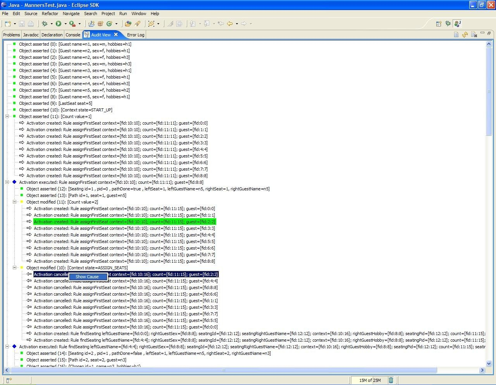

The IDE provides developers (and very technical users) with an environment to edit and test rules in various formats, and integrate it deeply with their applications. In cases where you prefer business rules and web tooling, you will want to look at the BRMS (but using the BRMS and the IDE together is not uncommon).
The Drools IDE is delivered as an eclipse plugin, which allows you to author and manage rules from within Eclipse, as well as integrate rules with your application. This is an optional tool, and not all components are required to be used, you can use what components are relevant to you. The Drools IDE is also a part of the Red Hat Developer Studio (formerly known as JBoss IDE).
This guide will cover some of the features of JBoss Drools, in as far as the IDE touches on them (it is assumed that the reader has some familiarity with rule engines, and Drools in particular. It is important to note that none of the underlying features of the rule engine are dependent on Eclipse, and integrators are free to use their tools of choice, as always ! Plenty of people use IntelliJ with rules, for instance.
Note you can get the plug in either as a zip to download, or from an update site (refer to the chapter on installation).
The rules IDE has the following features
Textual/graphical rule editor
An editor that is aware of DRL syntax, and provides content assistance (including an outline view)
An editor that is aware of DSL (domain specific langauge) extensions, and provides content assistance.
RuleFlow graphical editor
You can edit visual graphs which represent a process (a rule flow). The RuleFlow can then be applied to your rule package to have imperative control.
Wizards to accelerate and ...
Help you quickly create a new "rules" project
Create a new rule resource
Create a new Domain Specific language
Create a new decision table, guided editor, ruleflow
A domain specific language editor
Create and manage mappings from your users language to the rule language
Rule validation
As rules are entered, the rule is "built" in the background and errors reported via the problem "view" where possible
You can see the above features make use of Eclipse infrastructure and features. All of the power of eclipse is available.
The aim of the new project wizard is to setup an executable scaffold project to start using rules immediately. This will setup a basic structure, classpath and sample rules and test case to get you started.
When you choose to create a new "rule project" - you will get a choice to add some default artifacts to it (like rules, decision tables, ruleflows etc). These can serve as a starting point, and will give you something executable to play with (which you can then modify and mould to your needs). The simplest case (a hello world rule) is shown below. Feel free to experiment with the plugin at this point.

The newly created project contains an example rule file (Sample.drl) in the src/rules dir and an example java file (DroolsTest.java) that can be used to execute the rules in a Drools engine in the folder src/java, in the com.sample package. All the others jars that are necessary during execution are also added to the classpath in a custom classpath container called Drools Library. Rules do not have to be kept in "java" projects at all, this is just a convenience for people who are already using eclipse as their Java IDE.
Important note: The Drools plug in adds a "Drools Builder" capability to your eclipse instance. This means you can enable a builder on any project that will build and validate your rules when resources change. This happens automatically with the Rule Project Wizard, but you can also enable it manually on any project. One downside of this is if you have rule files that have a large number of rules (>500 rules per file) it means that the background builder may be doing a lot of work to build the rules on each change. An option here is to turn off the builder, or put the large rules into .rule files, where you can still use the rule editor, but it won't build them in the background - to fully validate the rules you will need to run them in a unit test of course.
You can create a rule simple as an empty text ".drl" file, or use the wizard to do so. The wizard menu can be invoked by Control+N, or choosing it from the toolbar (there will be a menu with the JBoss Drools icon).

The wizard will ask for some basic options for generating a rule resource. These are just hints, you can change your mind later !. In terms of location, typically you would create a top level /rules directory to store your rules if you are creating a rule project, and store it in a suitably named subdirectory. The package name is mandatory, and is similar to a package name in java (ie. its a namespace that groups like rules together).
This result of this wizard is to generate a rule skeleton to work from. As with all wizards, they are candy: you don't have to use them if you don't want !
The rule editor is where rule managers and developers will be spending most of their time. The rule editor follows the pattern of a normal text editor in eclipse, with all the normal features of a text editor. On top of this, the rule editor provides pop up content assistance. You invoke popup content assistance the "normal" way by pressing Control + Space at the same time.

The rule editor works on files that have a .drl (or .rule) extension. Rules are generally grouped together as a "package" of rules (like the old ruleset construct). It will also be possible to have rules in individual files (grouped by being in the same package "namespace" if you like). These DRL files are plain text files.
You can see from the example above that the package is using a domain specific language (note the expander keyword, which tells the rule compiler to look for a dsl file of that name, to resolve the rule language). Even with the domain specific language (DSL) the rules are still stored as plain text as you see on screen, which allows simpler management of rules and versions (comparing versions of rules for instance).
The editor has an outline view that is kept in sync with the structure of the rules (updated on save). This provides a quick way of navigating around rules by name, in a file which may have hundreds of rules. The items are sorted alphabetically by default.

A new feature of the Drools IDE (since version 4) is the guided editor for rules. This is similar to the web based editor that is available in the BRMS. This allows you to build rules in a GUI driven fashion, based on your object model.
To create a rule this way, use the wizard menu. It will create a instance of a .brl file and open an editor. The guided editor works based on a .package file in the same directory as the .brl file. In this "package" file - you have the package name and import statements - just like you would in the top of a normal DRL file. So the first time you create a brl rule - you will need to ppulate the package file with the fact classes you are interested in. Once you have this the guided editor will be able to prompt you with facts/fields and build rules graphically.
The guided editor works off the model classes (fact classes) that you configure. It then is able to "render" to DRL the rule that you have entered graphically. You can do this visually - and use it as a basis for learning DRL, or you can use it and build rules of the brl directly. To do this, you can either use the drools-ant module (it is an ant task that will build up all the rule assets in a folder as a rule package - so you can then deploy it as a binary file), OR you can use the following snippet of code to convert the brl to a drl rule:
BRXMLPersitence read = BRXMLPersitence.getInstance(); BRDRLPersistence write = BRDRLPersistence.getInstance(); String brl = ... read from the .brl file as needed... String outputDRL = write.marshall(read.unmarshal(brl)); //then pass the outputDRL to the PackageBuilder as normal
When debugging an application using a Drools engine, these views can be used to check the state of the Drools engine itself: the Working Memory View, the Agenda View the Global Data View. To be able to use these views, create breakpoints in your code invoking the working memory. For example, the line where you call workingMemory.fireAllRules() is a good candidate. If the debugger halts at that joinpoint, you should select the working memory variable in the debug variables view. The following rules can then be used to show the details of the selected working memory:
The Working Memory shows all elements in the working memory of the Drools working memory.
The Agenda View shows all elements on the agenda. For each rule on the agenda, the rule name and bound variables are shown.
The Global Data View shows all global data currently defined in the Drools working memory.
The Audit view can be used to show audit logs that contain events that were logged during the execution of a rules engine in a tree view.

The Working Memory shows all elements in the working memory of the Drools engine.
An action is added to the right of the view, to customize what is shown:
The Show Logical Structure toggles showing the logical structure of the elements in the working memory, or all their details. Logical structures allow for example visualizing sets of elements in a more obvious way.
The Agenda View shows all elements on the agenda. For each rule on the agenda, the rule name and bound variables are shown.
An action is added to the right of the view, to customize what is shown:
The Show Logical Structure toggles showing the logical structure of the agenda item, or all their details. Logical structures allow for example visualizing sets of elements in a more obvious way. The logical structure of AgendaItems shows the rule that is represented by the AgendaItem, and the values of all the parameters used in the rule.

The Global Data View shows all global data currently defined in the Drools engine.
An action is added to the right of the view, to customize what is shown:
The Show Logical Structure toggles showing the logical structure of the elements in the working memory, or all their details. Logical structures allow for example visualizing sets of elements in a more obvious way.
|  |
The audit view can be used to visualize an audit log that can be created when executing the rules engine. To create an audit log, use the following code:
WorkingMemory workingMemory = ruleBase.newWorkingMemory();
// create a new Working Memory Logger, that logs to file.
WorkingMemoryFileLogger logger = new WorkingMemoryFileLogger(workingMemory);
// an event.log file is created in the log dir (which must exist)
// in the working directory
logger.setFileName("log/event");
workingMemory.assertObject( ... );
workingMemory.fireAllRules();
// stop logging
logger.writeToDisk();Open the log by clicking the Open Log action (first action in the Audit View) and select the file. The Audit view now shows all events that where logged during the executing of the rules. There are different types of events (each with a different icon):
Object inserted (green square)
Object updated (yellow square)
Object removed (red square)
Activation created (arrow to the right)
Activation cancelled (arrow to the left)
Activation executed (blue diamond)
Ruleflow started / ended (process icon)
Ruleflow-group activated / deactivated (process icon)
Rule package added / removed (Drools icon)
Rule added / removed (Drools icon)
All these events show extra information concerning the event, like the id and toString representation of the object in case of working memory events (assert, modify and retract), the name of the rule and all the variables bound in the activation in case of an activation event (created, cancelled or executed). If an event occurs when executing an activation, it is shown as a child of the activation executed event. For some events, you can retrieve the "cause":
The cause of an object modified or retracted event is the last object event for that object. This is either the object asserted event, or the last object modified event for that object.
The cause of an activation cancelled or executed event is the corresponding activation created event.
When selecting an event, the cause of that event is shown in green in the audit view (if visible of course). You can also right click the action and select the "Show Cause" menu item. This will scroll you to the cause of the selected event.
Domain Specific Languages (dsl) allow you to create a language that allows your rules to look like, rules ! Most often the domain specific language reads like natural language. Typically you would look at how a business analyst would describe the rule, in their own words, and then map this to your object model via rule constructs. A side benefit of this is that it can provide an insulation layer between your domain objects, and the rules themselves (as we know you like to refactor !). A domain specific language will grow as the rules grow, and works best when there are common terms used over an over, with different parameters.
To aid with this, the rule workbench provides an editor for domain specific languages (they are stored in a plain text format, so you can use any editor of your choice - it uses a slightly enhanced version of the "Properties" file format, simply). The editor will be invoked on any files with a .dsl extension (there is also a wizard to create a sample DSL).
The DSL editor provides a table view of Language Expression to Rule Expression mapping. The Language expression is what is used in the rules. This also feeds the content assistance for the rule editor, so that it can suggest Language Expressions from the DSL configuration (the rule editor loads up the DSL configuration when the rule resource is loaded for editing). The Rule language mapping is the "code" for the rules - which the language expression will be compiled to by the rule engine compiler. For form of this Rule language depends if it is for a condition or action part of a rule (it may be a snippet of java, for instance). The "scope" item indicates where the expression is targeted: is it for the "when" part of the rule (LHS)? the "then" part (RHS)? Or anywhere?
By selecting a mapping item (a row in the table) you can see the expression and mapping in the greyed out fields below. Double clicking or pressing the edit button will open the edit dialog. You can remove items, and add new ones (you should generally only remove when you know that expression is no longer in use).

How it works: the "Language expression" is used to parse the rule language, depending on what the "scope" is set to. When it is found in a rule, the values that are market by the curly braces {value} are extracted from the rule source. These values are then interpolated with the "Rule mapping" expression, based on the names between the curly braces. So in the example above, the natural language expression maps to 2 constraints on a fact of type Person (ie the person object has the age field as less than {age}, and the location value is the string of {value}, where {age} and {value} are pulled out of the original rule source. The Rule mapping may be a java expression (such as if the scope was "then"). If you did not wish to use a language mapping for a particular rule in a drl, prefix the expression with > and the compiler will not try to translate it according to the language definition. Also note that domain specific languages are optional. When the rule is compiled, the .dsl file will also need to be available.
The Rete Tree View shows you the current Rete Network for your drl file. Just click on the tab "Rete Tree" below on the DRL Editor. Afterwards you can generate the current Rete Network visualization. You can push and pull the nodes to arrange your optimal network overview. If you got hundreds of nodes, select some of them with a frame. Then you can pull groups of them. You can zoom in and out, in case not all nodes are shown in the current view. For this press the button "+" oder "-".
There is no export function, which creates a gif or jpeg picture, in the current release. Please use ctrl + alt + print to create a copy of your current eclipse window and cut it off.

The graph is created with the Java Universal Network/Graph Framework (JUNG). The Rete View is an advanced feature which is still in experimental state. It uses Swing inside eclipse. In future it will maybe improved using SWT or GEF.
The Rete view works only in Drools Rule Projects, where the Drools Builder is set in the project´s properties.
If you are using Drools in an other type of project, where you are not having a Drools Rule Project with the appropriate Drools Builder, you can create a little workaround:
Set up a little Drools Rule Project next to it, putting needed libraries into it and the drls you want to inspect with the Rete View. Just click on the right tab below in the DRL Editor, followed by a click on "Generate Rete View".
Depending on the JDK you use, it may be necessary to increase the permanent generation max size. Both SUN and IBM jdk have a permanent generation, whereas BEA JRockit does not.
To increase the permanent generation, start eclipse with -XX:MaxPermSize=###m
Example: c:\eclipse\eclipse.exe -XX:MaxPermSize=128m
Rulesets of 4,000 rules or greater should set the permanent generation to atleast 128Mb.
(note that this may also apply to compiling large numbers of rules in general - as there is generally one or more classes per rule).
As an alternative to the above, you may put rules in a file with the ".rule" extension, and the background builder will not try to compile them with each change, which may provide performance improvements if your IDE becomes sluggish with very large numbers of rules.
You can debug rules during the execution of your Drools application. You can add breakpoints in the consequences of your rules, and whenever such a breakpoint is uncounted during the execution of the rules, the execution is halted. You can then inspect the variables known at that point and use any of the default debugging actions to decide what should happen next (step over, continue, etc.). You can also use the debug views to inspect the content of the working memory and agenda.
You can add/remove rule breakpoints in drl files in two ways, similar to adding breakpoints to Java files:
Double-click the ruler of the DRL editor at the line where you want to add a breakpoint. Note that rule breakpoints can only be created in the consequence of a rule. Double-clicking on a line where no breakpoint is allowed will do nothing. A breakpoint can be removed by double-clicking the ruler once more.
If you right-click the ruler, a popup menu will show up, containing the "Toggle breakpoint" action. Note that rule breakpoints can only be created in the consequence of a rule. The action is automatically disabled if no rule breakpoint is allowed at that line. Clicking the action will add a breakpoint at the selected line, or remove it if there was one already.
The Debug Perspective contains a Breakpoints view which can be used to see all defined breakpoints, get their properties, enable/disable or remove them, etc.
Drools breakpoints are only enabled if you debug your application as a Drools Application. You can do this like this:
Select the main class of your application. Right click it and select the "Debug As >" sub-menu and select Drools Application. Alternatively, you can also select the "Debug ..." menu item to open a new dialog for creating, managing and running debug configurations (see screenshot below)
Select the "Drools Application" item in the left tree and click the "New launch configuration" button (leftmost icon in the toolbar above the tree). This will create a new configuration and already fill in some of the properties (like the project and main class) based on main class you selected in the beginning. All properties shown here are the same as any standard Java program.
Change the name of your debug configuration to something meaningful. You can just accept the defaults for all other properties. For more information about these properties, please check the eclipse jdt documentation.
Click the "Debug" button on the bottom to start debugging your application. You only have to define your debug configuration once. The next time you try to run your Drools application, you don't have to create a new one but select the one you defined previously by selecting it in the tree on the left, as a sub-element of the "Drools Application" tree node, and then click the Debug button. The eclipse toolbar also contains shortcut buttons to quickly re-execute the one of your previous configurations (at least when the Java, Java Debug, or Drools perspective has been selected).
After clicking the "Debug" button, the application starts executing and will halt if any breakpoint is encountered. This can be a Drools rule breakpoint, or any other standard Java breakpoint. Whenever a Drools rule breakpoint is encountered, the corresponding drl file is opened and the active line is highlighted. The Variables view also contains all rule parameters and their value. You can then use the default Java debug actions to decide what to do next (resume, terminate, step over, etc.). The debug views can also be used to determine the contents of the working memory and agenda at that time as well (you don't have to select a working memory now, the current executing working memory is automatically shown).